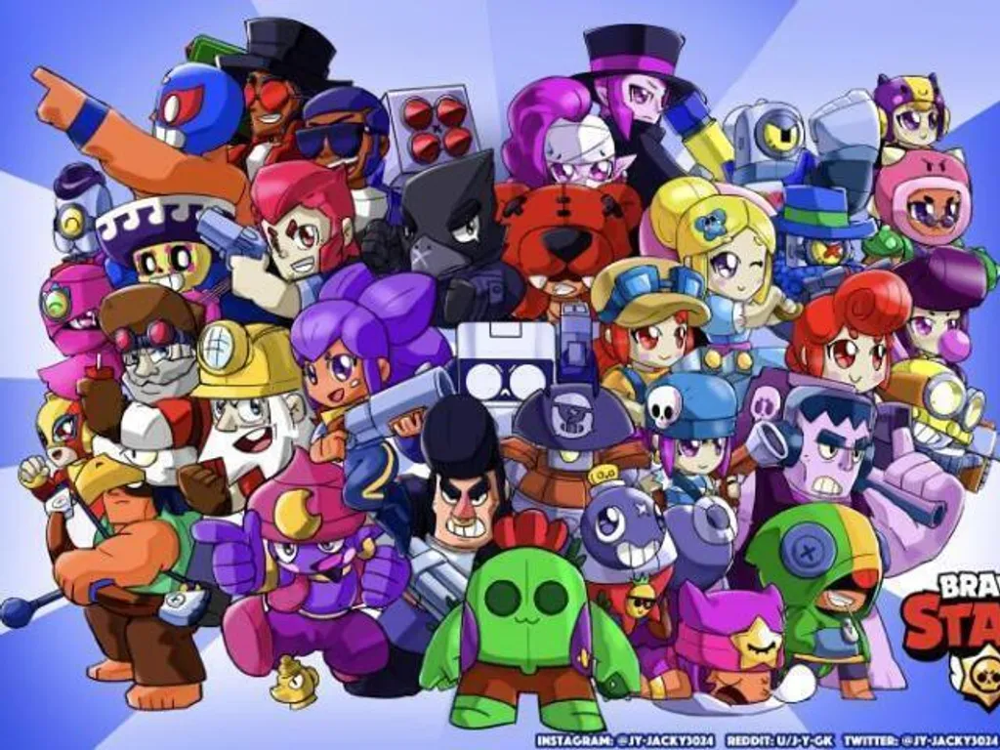

Brawl Stars, meu jogo favorito desde 11 anos.
Brawl Stars é um jogo mobile desenvolvido pela empresa Supercell, a mesma empresa responsável pelo Clash Royale, Hay Day, etc. Foi lançado globalmente em 2018.
Ele é um jogo de ação multiplayer onde jogadores competem em diferentes modos de batalha,
como sobrevivência, captura de gemas e roubo. O jogo se destaca por sua jogabilidade rápida
e partidas dinâmicas.

Personagens (Brawlers)
No jogo existem diversos personagens chamados Brawlers, cada um com habilidades únicas.
Alguns são mais fortes de perto, como o El Primo, enquanto outros atacam de longe, como a Piper.
Isso torna o jogo estratégico e divertido, pois cada jogador pode escolher seu estilo favorito.

Raridade dos Brawlers
Em Brawl Stars, os personagens também são divididos por raridade. O jogador começa com um Brawler
inicial chamado Shelly. Depois disso, existem diferentes níveis de raridade que indicam o quão
difícil é desbloquear cada personagem.
As raridades incluem: Raro, Super Raro, Épico, Mítico, Lendário e Ultra Lendário (também chamados
de Cromáticos em algumas versões do jogo). Quanto mais rara a categoria, mais difícil é conseguir
o personagem, e geralmente eles possuem habilidades únicas e mais complexas.

Classes de Brawlers (lutadores) no jogo
Os personagens de Brawl Stars são divididos em classes, cada uma com funções diferentes no jogo.
Os Tanques possuem muita vida e são ideais para combate de perto. Os Atiradores causam muito dano
à distância. Os Assassinos são rápidos e ótimos para eliminar inimigos rapidamente.
Também existem Controladores, que dominam áreas do mapa, e Suportes, que ajudam a equipe com cura
ou habilidades especiais. Essas classes tornam o jogo mais estratégico, pois cada jogador precisa
escolher bem seu personagem dependendo do modo de jogo.
Habilidades Especiais
Cada Brawler possui um ataque principal e um super ataque, que pode mudar completamente o rumo da partida.
Além disso, existem poderes estelares e gadgets que deixam os personagens ainda mais fortes.
Por que eu gosto de Brawl Stars
Eu gosto de Brawl Stars porque é um jogo muito divertido e competitivo. As partidas são rápidas
e sempre diferentes, o que evita que o jogo fique repetitivo. Além disso, jogar com amigos torna
a experiência ainda melhor.
Outro motivo é a variedade de personagens e modos de jogo. Sempre há algo novo para desbloquear
e aprender, o que me mantém interessado no jogo por muito tempo. Os gráficos coloridos e o estilo
único também são muito legais.